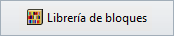

Valla
¿Dónde puedo encontrar este comando?
laValla
Icono:

clic izquierdo
Las vallas son elementos que se emplearán para dividir el jardín o el parque en sectores para diferentes usos.
Las vallas se definen por la combinación de tres componentes que se pueden añadir o eliminar en cualquier momento: Postes, Tablones y Travesaños.
Insertar una valla:
Cuando ejecute el comando laValla, aparecerá el cuadro de diálogo de inserción de valla. Este diálogo muestra las opciones básicas del objeto Valla en dos fichas.
- Valla: parámetros de valla.
- Poste: parámetros del componente poste.
- Tablón: parámetros del componente tablón.
- Material: opciones de material para el objeto Valla.
Pasos:
- Seleccione los parámetros de Valla. Pulse Aceptar para cerrar diálogo.
- Designe una curva existente en el modelo para definir la trayectoria de la valla, o seleccione una opción diferente en la línea de comandos.
- Polilínea: la valla se creará como si dibujara una polilínea.
- Spline: la valla se creará como si dibujara una spline.
- Círculo: la valla se creará como si dibujara un círculo. El primer clic determina el centro del círculo y el segundo clic determina el radio.
- Arco: la valla se creará como si estuviera dibujando un arco. El primero clic determina el punto de inserción. El segundo determina el clic determina un punto medio en el arco. El tercer y último clic determina dónde termina el arco.
- Rectángulo: la valla se creará como si dibujara un rectángulo. El primer clic determina una esquina del rectángulo y el segundo clic determina la esquina opuesta.
- Pulse Intro, Esc o haga clic con el botón derecho para finalizar el comando.
Lands empleará tantos postes y tablones como sean necesarios hasta completar la longitud del eje de la valla, respetando, en la medida de lo posible, los parámetros de separación y cantidad descritos arriba.
Nota: la valla se puede construir prescindiendo de cualquiera de los tres tipos de componentes. Sin embargo, no se puede prescindir de postes y tablones a la vez.

Cuadro de inserción del objeto Valla.
Puntos de control 
El objeto Valla tiene el mismo número de puntos de control que las curvas utilizadas para generarlo.
Además, tiene una flecha de control de movimiento para mover todo el objeto.
Los puntos de control de las vallas se activan automáticamente al seleccionar las vallas una por una. Para activar uno o más puntos de control del objeto Valla, seleccione las vallas y ejecute el comando ActivarPuntos (o pulse F10). Para desactivar los puntos de control de un objeto Valla, pulse Esc o ejecute el comando DesactivarPuntos.
Opciones y parámetros de inserción
Los parámetros y las opciones de inserción de Valla se dividen en varias fichas, que están disponibles desde diferentes diálogos:
General
Atributos generales del objeto Valla: Nombre, Color, Código y Palabras clave.
Valla
Esta ficha permite editar los parámetros generales de los componentes de la valla: Postes, Tablones y Travesaños.
- Postes: son el componente vertical principal de una valla. Se colocan en los puntos final e inicial de una curva de trayectoria de valla y en cada uno de los puntos de discontinuidad entre ellos. Se pueden distribuir de dos formas:
- Distancia entre postes: distancia entre postes cuando no hay puntos de discontinuidad entre ellos. Este parámetro afecta al parámetro de Cantidad de tablones, que se calcula automáticamente.
- Por cantidad de tablones: el parámetro de cantidad de tablones determina la distancia entre tablones. Esta opción sólo está disponible si el componente tablón está activado.
- Tablones: elementos verticales ubicados entre los postes de una valla.
- Separación: distancia entre tablones cuando no hay puntos de discontinuidad en medio.
- Cantidad: número de tablones entre dos postes. El número puede no ser real en la última parte de la valla o en segmentos de la valla que sean muy cortos.
- Elevación: distancia entre el borde inferior de los tablones y la curva de trayectoria de la valla. La opción Centrado centra los tablones verticalmente, tomando la altura del poste como valor de referencia.
- Travesaños: elementos de valla horizontales que siguen la curva de trayectoria de la valla.
- Perfil: a diferencia de los postes y tablones, los travesaños tienen un perfil rectangular.
- Cantidad: número de elementos de travesaños en la valla.
- Separación: distancia entre travesaños. La opción
Equidistribuidos establece la misma distancia de separación entre los travesaños.
- Elevación: distancia entre el elemento de carril inferior y la curva de trayectoria de la valla. La opción Centrado centra los travesaños verticalmente, tomando la altura del poste como valor de referencia.
- Alineación: posición de los travesaños (Izquierda, Centro, Derecha) en relación con el componente Poste y Tablón.
Poste
Esta ficha aparece cuando el componente Poste está activado en la ficha Valla. Puede definir los siguientes parámetros:
- Selección de objetos: puede seleccionar la geometría del poste de diferentes formas:
-  Bloque de la Librería de bloques.
- Un archivo desde su PC
- Objeto existente en el modelo.
- Cotas: las cotas del poste se calculan automáticamente a partir de la geometría seleccionada (de acuerdo con las cotas de su cuadro delimitador). Puede cambiar estas cotas y el objeto se escalará debidamente.
- Escala uniforme: con el objetivo de conservar las proporciones del componente, esta opción hace que las cotas del poste cambien automáticamente al editar cualquiera de sus valores.
Tablón
Esta ficha aparece cuando el componente Tablón está activado en la ficha Valla. Puede definir los siguientes parámetros:
- Selección de objetos: puede seleccionar la geometría del tablón de diferentes formas:
- Bloque de la Librería de bloques.
- Un archivo desde su PC
- Objeto existente en el modelo.
- Cotas: las cotas del tablón se calculan automáticamente a partir de la geometría seleccionada (de acuerdo con las cotas de su cuadro delimitador). Puede cambiar estas cotas y el objeto se escalará debidamente.
- Escala uniforme: con el objetivo de conservar las proporciones del componente, esta opción hace que las cotas del tablón cambien automáticamente al editar cualquiera de sus valores.
Material
Esta ficha permite cambiar la imagen texturizada asignada a este elemento y definir el tamaño de la imagen, la reflectividad y la transparencia.
Los componentes de postes y tablones tomarán el material de la valla si sus partes constituyentes tienen el material asignado Por capa principal.
Opciones de edición
Estas son las opciones de edición del objeto de valla, disponibles en el área de edición del Panel de edición:
Representación gráfica de la valla:
El objeto Valla ofrece una representación en 2D y 3D simultánea en el dibujo.